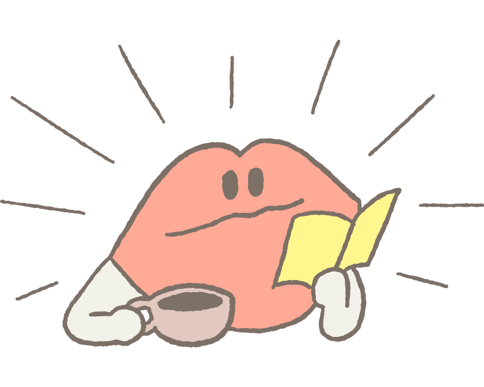
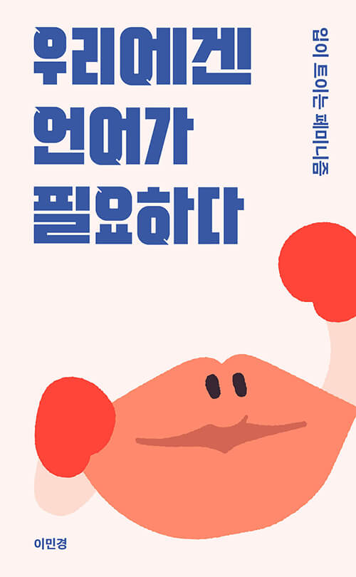

당신은
팔방미인
페미니스트
일상의 지혜를 추구하는 명랑한 독서가입니다. 다양한 방식으로 신선한 통찰과 자극을 주는 이 책들을 추천해요.
- 주로 편안한 독서를 즐겨요. 책 추천도 좋아하는 편!
- 세상을 보는 관점을 넓히고 지혜의 깊이를 늘리는 데 관심이 있어요.
- 페미니즘 주제들에 공감과 고민을 함께 느껴요.
- 선명한 글, 구체적인 말에서 에너지와 영감을 얻어요.
이런 책이 잘 맞아요!

우리에겐 언어가 필요하다
입이 트이는 페미니즘
평등을 얘기할 때 아직도 "이제 역차별 시대다" "너 페미냐?" 소리를 듣는 우리에게 여전히 필요한 불굴의 페미니즘 실용서. 일상회화 실전 대응 매뉴얼 포함!

결혼 탈출
겪어보기 전에는 알 수 없었던 ‘결혼한 여자’의 삶 그리고 용감한 탈출의 기록. "무언가 잘못됐다고 느꼈다." 최고의 결혼식과 허니문이 끝난 다음 날, 무슨 일이 일어났을까?

꿈을 그리는 여자들
일러스트 위인전(일러스트북)
‘여성 위인’으로 현모양처 신사임당이나 먼 나라의 영부인을 떠올리기는 이제 그만! 지난 200년간 지구상 여기저기서 멋지게 살아온 20명의 여성을 그림 위인전으로 만나보자.
✔초등학교 고학년부터!